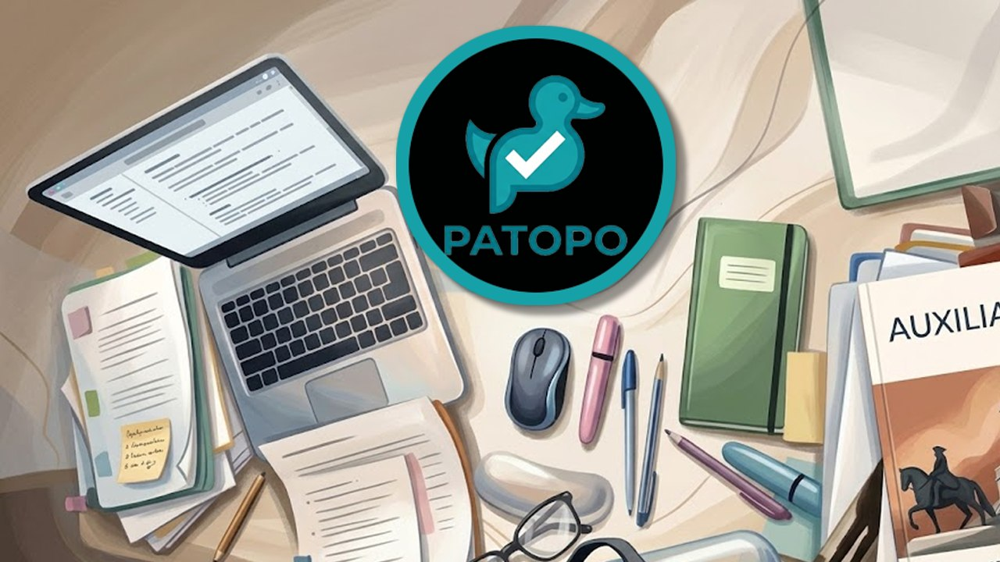

Elige una de las tres formas de entrenar para el examen. Cada test mezcla preguntas de tu banco propio con preguntas nuevas generadas al momento.
Réplica breve del examen real: 6 preguntas de psicotécnico + 6 de leyes (13 min), y 6 de ofimática (7 min).
≈ 20 minutosTu test a medida: elige el número de preguntas (6/12/24), hasta 4 temas y si quieres incluir psicotécnico.
ConfigurableRéplica exacta del examen real: 30 psicotécnicas + 30 de leyes (65 min), y 30 de ofimática (35 min).
≈ 100 minutos